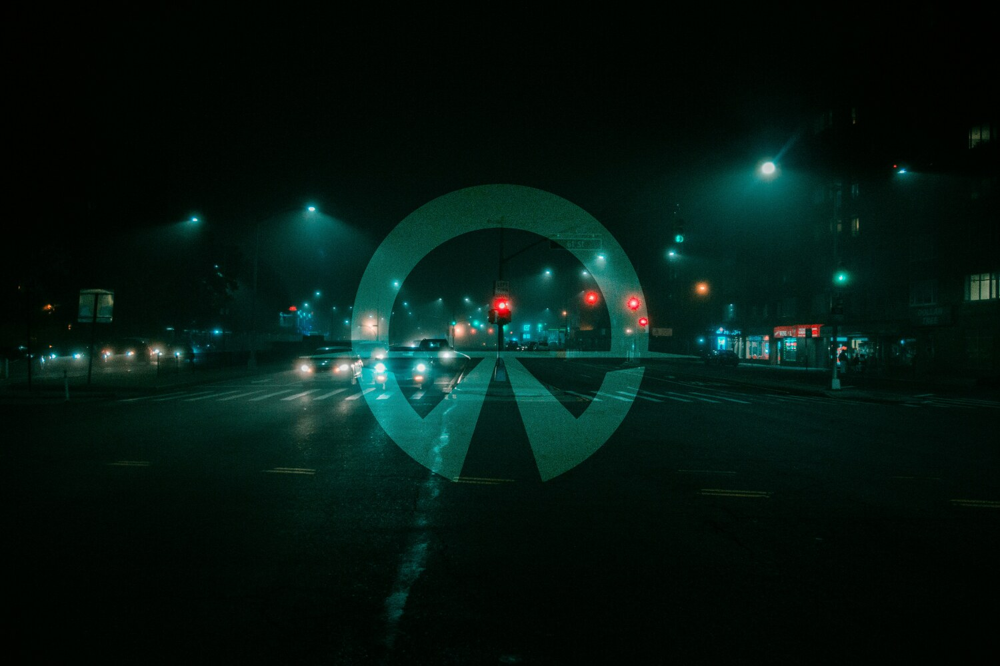

Cinematic electronic music — Europe
Nightliner 81 is a cinematic electronic music project inspired by long-distance touring across Europe.
Created between highways, empty parking lots, sleeping cities and countless nights on the road, Nightliner 81 blends electronic music, field recordings and visual storytelling into a continuous travel journal.
The sound takes shape wherever the road leads — backstage at festivals, in auditoriums and arenas, or in the bunk of the bus between two shows.
This channel is a collection of late-night drives, ambient soundscapes, documentaries, road films and original music.
Every journey leaves a trace.
Somewhere in Europe...
The first transmissions are already out. More are on the way.